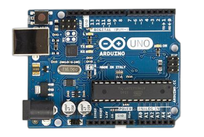
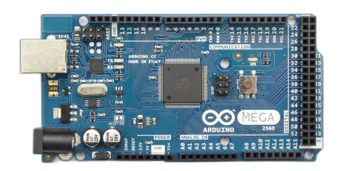
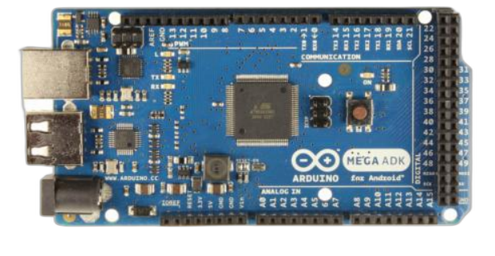
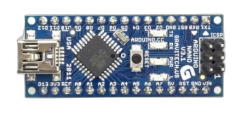
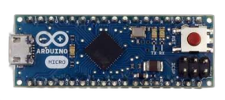
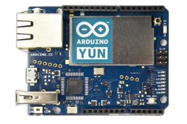
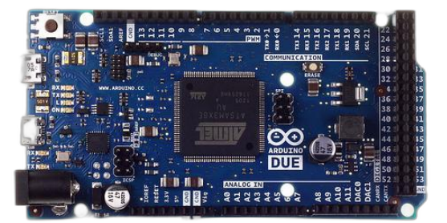
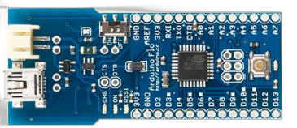

El Arduino Leonardo es una placa de desarrollo basada en el microcontrolador ATmega32u4. Tiene 20 pines de entrada/salida digital (7 de ellos pueden ser usados como salida PWM), un cristal de 16Mhz, conexión micro USB, conector DC de alimentación, conector ICSP y botón de reseteo.
El Arduino Uno es una placa de desarrollo basada en el microcontrolador ATmega328. Tiene 14 pines de entrada/salida digital (de los cuales 6 pueden ser usados como salida PWM), 6 entradas analógicas, un cristal de 16Mhz, conexión micro USB, conector DC de alimentación, conector ICSP y botón de reseteo.
El Arduino Mega es una placa de desarrollo basada en el microcontrolador ATmega2560. Tiene 54 pines de entrada/salida digital (de los cuales 15 pueden ser usados como salida PWM), 16 entradas analógicas, un cristal de 16Mhz, conexión micro USB, conector DC de alimentación, conector ICSP y botón de reseteo.
El Arduino Mega ADK es una placa de desarrollo basada en el microcontrolador ATmega2560. Tiene 54 pines de entrada/salida digital (de los cuales 15 pueden ser usados como salida PWM), 16 entradas analógicas, un cristal de 16Mhz, conexión micro USB, conector DC de alimentación, conector ICSP y botón de reseteo.
El Arduino Nano es una placa de desarrollo basada en el microcontrolador ATmega328. Tiene 14 pines de entrada/salida digital (de los cuales 6 pueden ser usados como salida PWM), 8 entradas analógicas, un cristal de 16Mhz, conexión micro USB, conector DC de alimentación, conector ICSP y botón de reseteo.
El Arduino Micro es una placa de desarrollo basada en el microcontrolador ATmega32u4. Tiene 20 pines de entrada/salida digital (7 de ellos pueden ser usados como salida PWM), un cristal de 16Mhz, conexión micro USB, conector DC de alimentación, conector ICSP y botón de reseteo.
El Arduino Yun es una placa de desarrollo basada en el microcontrolador ATmega32u4. Tiene 20 pines de entrada/salida digital (7 de ellos pueden ser usados como salida PWM), un cristal de 16Mhz, conexión micro USB, conector DC de alimentación, conector ICSP y botón de reseteo.
El Arduino Due es una placa de desarrollo basada en el microcontrolador ARM Cortex-M3 AT91SAM3X8E. Tiene 54 pines de entrada/salida digital (de los cuales 12 pueden ser usados como salida PWM), 12 entradas analógicas, un cristal de 84Mhz, conexión micro USB, conector DC de alimentación, conector ICSP y botón de reseteo.
El Arduino Fio es una placa de desarrollo basada en el microcontrolador ATmega328. Tiene 14 pines de entrada/salida digital (de los cuales 6 pueden ser usados como salida PWM), 6 entradas analógicas, un cristal de 16Mhz, conexión micro USB, conector DC de alimentación, conector ICSP y botón de reseteo.